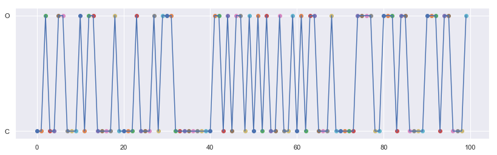

Random States
import random as random import numpy as np import matplotlib.pyplot as plt import seaborn as sns sns.set() %matplotlib inline
Choosing random states
We can apply python library called 'random' to choose random states out of provided states like 'O' and 'C'.
allstate=[] for i in range(10000): allstate.append(random.choice(["O","C"])) #print(s)
len(allstate)
10000
allstate.count("O")
4960
allstate.count("C")
5040
This shows that randomly choosed states out of 2 states are 50-50 % in distribution
Choosing Random states with weighted probability
We can choose random states with weighted probability
np.random.choice(["O","c"],p=[0.9,0.1])
'O'
allstate=[] for i in range(10000): allstate.append(np.random.choice(["O","C"],p=[0.9,0.1]))
len(allstate)
10000
allstate.count("C")
1017
allstate.count("O")
8983
Plot a Markov Chain
allstate=[] for i in range(100): allstate.append(np.random.choice(["O","C"],p=[0.4,0.6]))
plt.figure(figsize=[14,4]) X = [] Y = [] for x,y in enumerate(allstate): plt.scatter(x,y) X.append(x) Y.append(y) plt.plot(X,Y) plt.show()
